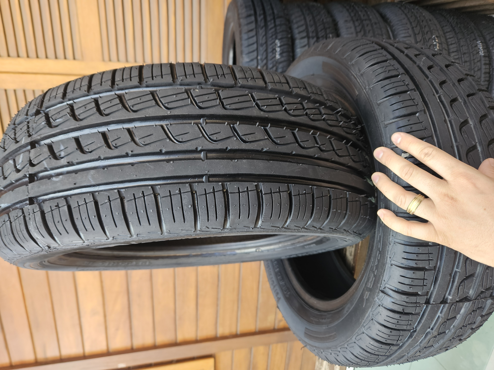

PNEU ARO 14
Os pneus aro 14 da Longway são projetados para oferecer uma excelente combinação de desempenho e durabilidade. Ideal para veículos de passeio, esses pneus proporcionam uma condução suave e segura, com ótima aderência em diversas condições de estrada.

PNEU ARO 15
Os pneus aro 15 da Longway são conhecidos por sua resistência e desempenho superior. Projetados para suportar diferentes tipos de terreno, esses pneus oferecem estabilidade e controle excepcionais.

PNEU ARO 16
Com os pneus aro 16 da Longway, você terá a garantia de uma experiência de condução premium. Perfeitos para veículos de alta performance, esses pneus asseguram uma resposta rápida e precisa, tornando cada viagem uma experiência única e segura.